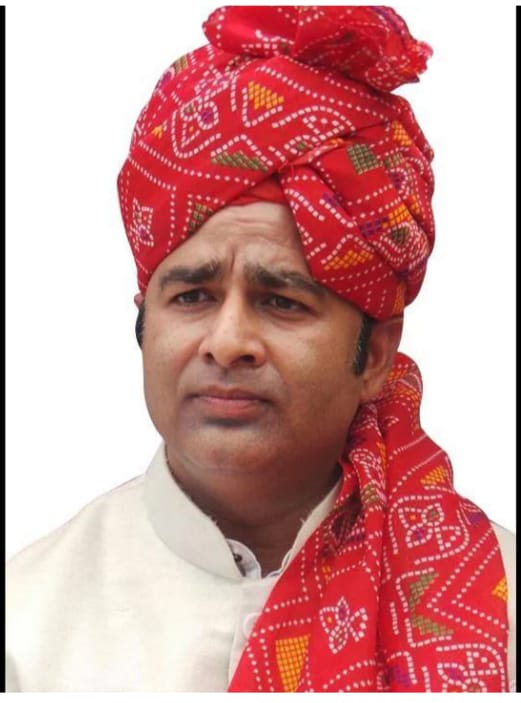
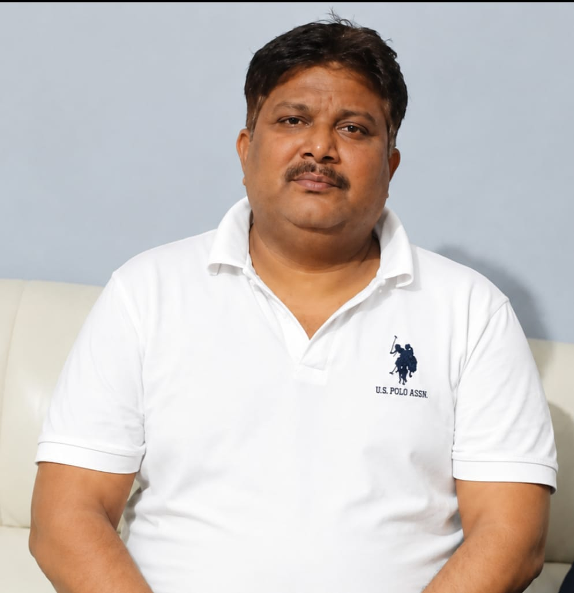

संगीत सोम जी सनातन धर्म के संरक्षण, जागरण और संगठन को मजबूत बनाने के लिए निरंतर कार्य कर रहे हैं। उनका उद्देश्य समाज में सनातन संस्कृति के प्रति जागरूकता बढ़ाना, युवाओं को अपने धर्म, संस्कारों और परंपराओं से जोड़ना तथा शिक्षा के माध्यम से बच्चों को सनातन के वास्तविक स्वरूप से परिचित कराना है।
वे समाज के प्रत्येक क्षेत्र में सनातन को सशक्त बनाने, लोगों को जागरूक करने तथा राष्ट्रहित और संस्कृति संरक्षण के कार्यों को आगे बढ़ाने के लिए समर्पित हैं। उनका प्रयास है कि आने वाली पीढ़ियाँ अपने गौरवशाली इतिहास और सनातन मूल्यों को समझें तथा उन्हें अपने जीवन में अपनाएँ।

अवनीश प्रधान जी संगीत सोम जी के साथ कंधे से कंधा मिलाकर सनातन धर्म के प्रचार-प्रसार, संगठन विस्तार और समाज जागरण के कार्य में सक्रिय रूप से लगे हुए हैं। वे लोगों को एक मंच पर लाने तथा समाज को एकजुट करने के लिए निरंतर प्रयासरत हैं।
उनका उद्देश्य है कि सनातन समाज जातियों और वर्गों में विभाजित न होकर एक परिवार के रूप में संगठित रहे। वे समाज में भाईचारे, एकता और सांस्कृतिक चेतना को मजबूत करने के लिए कार्य कर रहे हैं।
हमारा संदेश:
"जातियों में बंटेंगे तो कटेंगे, संगठित रहेंगे तो बढ़ेंगे।"
सनातन एकता जिंदाबाद।
सनातन एकता मंच का लक्ष्य मानवता के कल्याण, सामाजिक समरसता, सांस्कृतिक जागरण और सनातन धर्म के सार्वभौमिक मूल्यों को जन-जन तक पहुँचाना है।